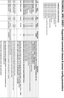

I just want to let you know that we have just released the new 2.0.0 Z-Wave version.
Goto OpenRemote+2.0 How To - Z-Wave and search for the controller and zwave.jar download links. Note that you have to download a new Controller in order to use the new zwava.jar — replacing the zwave.jar in your old controller is not sufficient.
Please note that the Z-Wave documentation for the new version hasn't been updated yet but this post is a kind of quick start guide for the more experienced OpenRemote users.
New Features
- Extended Z-Wave command class support
- Z-Wave node inclusion/exclusion commands
- Z-Wave association, Z-Wave parameter and wake-up interval configuration
Z-Wave Node Inclusion/Exclusion
With the new version it's possible to activate inclusion/exclusion mode by means of special commands in order to add Z-Wave nodes to the network or remove nodes from the network respectively. With this new feature it's now possible to support Z-Wave USB stick that do not have an inclusion/exclusion hardware button like the Aeon Labs Z-Stick S2.
The following commands are available:
INCLUSION_MODE_ON
INCLUSION_MODE_OFF
INCLUSION_MODE_STATUS
EXCLUSION_MODE_ON
EXCLUSION_MODE_OFF
EXCLUSION_MODE_STATUS
Use the Z-Wave node ID 1 in combination with these commands.
Z-Wave nodeID: 1 Command: INCLUSION_MODE_ON
With these command sets create two switches in the OpenRemote Designer and place them on your OpenRemote Designer panel design.
The inclusion/exclusion mode automatically turns off after 60 seconds or after a Z-Wave node has been added or removed.
After a successful inclusion of a new Z-Wave node you'll find a node<nodeID>.xml file in the ‚'<OpenRemote Controller>/webapps/controller/zwave' directory which contains all the information that has been read from the new device.
It may happen for any reason that a new Z-Wave node has been added with a new Z-Wave node ID to the network but an error occurred while reading Z-Wave device information form the device. If this happens you should exclude the device from the Z-Wave network even if no node<nodeID>.xml file has been created.
Inclusion/Exclusion by means of the Aeon Labs Z-Stick hardware button is still supported.
Z-Wave Association and Parameter Configuration
The node<nodeID>.xml file that I've previously mentioned contains a <configuration> section that is used to configure Z-Wave associations, Z-Wave parameters and the wake-up interval in case of battery powered devices.
Example (#FIBARO Multi Sensor):
<configuration hash="FA035ACF6EC2AF7CD89543A422425087"> <associations> <association-group id="1" capacity="5" /> <association-group id="2" capacity="5" /> <association-group id="3" capacity="1"> <association> <node>1</node> </association> </association-group> </associations> <parameters> <parameter> <number>24</number> <value>1</value> <size>1</size> </parameter> </parameters> <wake-up interval="7200" /> </configuration>
In order to configure the Z-Wave device you have to edit the <configuration> section manually - add associations, parameter settings and edit the wake-up interval. The modified settings will be activated after restart of the OpenRemote Controller. Editing the XML configuration manually is an intermediate solution until we have a GUI that facilitates the configuration of Z-Wave nodes.
With devices that have COMMAND_CLASS_MULTI_CHANNEL_ASSOCIATION support (e.g. #FIBARO Dimmer FGD-211, #FIBARO Relay Switch FGS-211, #FIBARO Double Relay Switch FGS-221) it's possible to configure multi instance associations with the following format:
<association> <node>13</node> <endpoint>2</endpoint> </association>
Use case example:
The #FIBARO Double Relay Switch has two binary switch instances. In order to address one of these 2 loads from another Fibaro switch that supports the COMMAND_CLASS_MULTI_CHANNEL_ASSOCIATION, a multi instance association has to be configured.
Z-Wave Command Configuration
The following description of the Z-Wave command configuration is based on the Z-Wave command classes that are supported by a Z-Wave device. Please take a look in the aforementioned node<nodeID>.xml files to find the command classes that are available. The following section lists the Z-Wave command classes and the related OpenRemote commands that have to be used in the OpenRemote Designer:
COMMAND_CLASS_SWITCH_BINARY : [ON, OFF, STATUS]
COMMAND_CLASS_SWITCH_MULTILEVEL : [DIM, ON, OFF, STATUS]
COMMAND_CLASS_SWITCH_MULTILEVEL_V3 : [UP, DOWN, STOP, DIM, STATUS, STATUS_LIVE]
COMMAND_CLASS_BATTERY : [BATTERY]
COMMAND_CLASS_SENSOR_BINARY : [STATUS]
COMMAND_CLASS_SENSOR_MULTILEVEL : [see following example]
Example (#FIBARO Motion Sensor FGMS-001):
<command-class id="0x31" version="5" name="COMMAND_CLASS_SENSOR_MULTILEVEL_V5"> <sensors> <sensor id="0x03" name="LUMINANCE"> <scales> <scale id="0x01">LUMINANCE_SCALE_LUX</scale> </scales> </sensor> <sensor id="0x01" name="AIR_TEMPERATURE"> <scales> <scale id="0x00">AIR_TEMPERATURE_SCALE_CELSIUS</scale> </scales> </sensor> </sensors> </command-class>
Resulting OR commands : [LUMINANCE_SCALE_LUX, AIR_TEMPERATURE_SCALE_CELSIUS]
COMMAND_CLASS_SENSOR_ALARM : [see following example]
Example (#FIBARO Smoke Sensor FGSS-001):
<command-class id="0x9C" version="1" name="COMMAND_CLASS_SENSOR_ALARM"> <sensors> <sensor id="0x00">GENERAL_PURPOSE_ALARM</sensor> <sensor id="0x04">HEAT_ALARM</sensor> <sensor id="0x01">SMOKE_ALARM</sensor> </sensors> </command-class>
Resulting OR commands : [GENERAL_PURPOSE_ALARM, HEAT_ALARM, SMOKE_ALARM]
COMMAND_CLASS_METER : [see following example]
Example (Qubino Flush 1 Relay):
<command-class id="0x32" version="3" name="COMMAND_CLASS_METER_V3"> <meter-type id="0x01">ELECTRIC_METER</meter-type> <scales> <scale id="0x02">ELECTRIC_METER_SCALE_W</scale> <scale id="0x00">ELECTRIC_METER_SCALE_KWH</scale> </scales> <meter-reset>true</meter-reset> </command-class>
Resulting OR commands : [ELECTRIC_METER_SCALE_W, ELECTRIC_METER_SCALE_KWH]
Z-Wave Command Configuration - Multi Instance
Some devices, like multi sensors or switches with more than one load, are composed of a root device and additional sub devices. Each sub device is an <endpoint> of the <endpoints> section in the node<nodeID>.xml file. In order to address such an endpoint it's necessary to append the endpoint number to the Z-Wave node ID separated by a colon. The following example (#FIBARO Flood Sensor FGFS-101) shows the resulting commands:
<endpoints> <endpoint number="1"> <generic-device-class id="0x20">GENERIC_TYPE_SENSOR_BINARY</generic-device-class> <specific-device-class id="0x01">SPECIFIC_TYPE_ROUTING_SENSOR_BINARY</specific-device-class> <command-classes> <command-class id="0x30" version="1" name="COMMAND_CLASS_SENSOR_BINARY" /> </command-classes> </endpoint> <endpoint number="2"> <generic-device-class id="0x21">GENERIC_TYPE_SENSOR_MULTILEVEL</generic-device-class> <specific-device-class id="0x01">SPECIFIC_TYPE_ROUTING_SENSOR_MULTILEVEL</specific-device-class> <command-classes> <command-class id="0x31" version="1" name="COMMAND_CLASS_SENSOR_MULTILEVEL"> <sensors> <sensor id="0x01" name="AIR_TEMPERATURE"> <scales> <scale id="0x00">AIR_TEMPERATURE_SCALE_CELSIUS</scale> </scales> </sensor> </sensors> </command-class> </command-classes> </endpoint> </endpoints>
Resulting OR commands:
Z-Wave nodeID: 72:1
Command: STATUS
Z-Wave nodeID: 72:2
Command: AIR_TEMPERATURE_SCALE_CELSIUS
Certified Devices
Fibaro Relay Switch FGS-211
Fibaro Double Relay Switch FGS-221
Fibaro Universal Dimmer FGD-211
Fibaro Roller Shutter 2 FGRM-222
Fibaro Wall Plug FGWPE-101
Fibaro Door/Window Sensor FGK-101-107
Fibaro Motion Sensor FGMS-001
Fibaro Flood Sensor FGFS-101
Fibaro Smoke Sensor FGSS-001
Aeon Labs (Aeotec) Z-Stick S2
Aeon Labs (Aeotec) Micro Smart Dimmer
Aeon Labs (Aeotec) Range Extender
Aeon Labs (Aeotec) 4-in-1 MultiSensor
Qubino Flush 1 Relay
Qubino Flush Dimmer
Qubino Flush Shutter
Z-Wave.Me Z-StickC
Z-Wave.Me ZME_UZB1 (500-series chip)
Known Issues:
- You have to add at least one Z-Wave command in the OpenRemote Designer and a related sensor otherwise the Z-Wave protocol is not initialized.
{kind=link}
{kind=link}
{kind=link}
{kind=link}
{kind=link}
{kind=link}
{kind=link}
{kind=link}
|
If I create two switches: inclusion and exclusion, I'll be able to include / exclude the z-wave device without removing the Aeon Labs Z-Stick S2 from Synology, and not to use the buttons on the Aeon Labs Z-Stick S2 for include / exclude the z-wave device? |
|
Exactly - you do not have to remove the Aeon Labs Z-Stick S2 if you have these software buttons. It's now possible to include/exclude Z-Wave devices with Z-Wave interfaces that do not have an inclusion/exclusion hardware button (e.g. Razberry). |
|
I have done so, that's right, all the commands for Node 1? |
|
Yes - you did it right. I forgot to mention that these special inclusion/exclusion commands should look like the following: Command: INCLUSION_MODE_ON Command: INCLUSION_MODE_OFF Command: INCLUSION_MODE_STATUS Command: EXCLUSION_MODE_ON Command: EXCLUSION_MODE_OFF Command: EXCLUSION_MODE_STATUS |
|
I'm trying the latest OR 2.1 release and I'm not having much luck with ZWave discovery. I think I've followed the manual (configure ZWave tty on free designer, copy zwave.jar, enable DEBUG logging, sync one panel) but my zwave.log only shows: INFO 2015-01-24 17:44:33,347 (Z-Wave): -------------------------------------------------------------------- OpenRemote Z-Wave protocol version : '2.0.0' -------------------------------------------------------------------- The serial device of my Aeon Labs stick works, I managed to get a BeNext dimmer switch on openHAB and I'm seeing other devices and settings in open-zwave-controller. Maybe I am missing some very basic OR Java service discovery setting somewhere, it almost looks like the zwave.jar isn't picked up. |
|
You have to add a Z-Wave command in the designer and in addition link the command with a sensor otherwise the Z-Wave network is not scanned. For example add the following command and also add a related switch sensor. Command: INCLUSION_MODE_STATUS The need for a sensor is a bug and we'll fix that in the next version. |
|
Thanks Rainer, that got me to the next step. I'm now seeing zwave log output. If anyone needs a 64 bit version of RXTXcomm.jar and librxtxSerial.so on x86 Linux, the following binaries seem to work as a drop-in replacement: https://code.google.com/p/create-lab-commons/source/browse/trunk/java/lib/rxtx/ |
There will soon be a micro firmware update for this device. |
|
Hi, I'm a beginner in Openremote and i only have one device in my zwave system. (Everspring SF812) I can see the smoke detector detection in zwave.log but my zwave folder is empty (no xml file) |
|
The new Z-Wave version can be used with the free controller. I assume that you have included the Everspring SF812 by means of the Aeon Labs Z-Stick button to the Z-Wave network. The SF812 is a battery powered device and is in sleep mode most of the time. When you restart the controller the Z-Wave protocol implementation tries to communicate with the device in order to read the device information and eventually create the nodeX.xml file. It's only possible to read the device information when the device is awake. You can configure this wake up frequency with the wake up time setting. Note that this wake up interval can be very long (hours). You can awake the SF812 manually if you triple press the inclusion/exclusion button. I'ld propose the following procedure:
If the previous procedure doesn't work you could try the following:
If you do not see a new nodeX.xml file take a look in the zwave.log file and search for errors. |
|
i installed openremote for the first time to get familliar with the software. My goal is to get zwave intoduced in my house. This is what the XML file; <?xml version="1.0" encoding="UTF-8"?> hope somebody can help me out. |
|
The information that has been read from the device and stored to the node4.xml file looks good. Based on the Z-Wave command class information from this file you can create the following OpenRemote commands: BATTERY The XML file does not contain the COMMAND_CLASS_METER_TBL_MONITOR that is used to read historical and aggregated meter values because it's currently not supported. I think that you have to configure parameter #2 depending on your meter system (if you have a meter with a rotating wheel the default should work): Sensor Type Configuration (Parameter #2): ROTATING WHEEL (Default):
<parameters>
<parameter>
<number>2</number>
<value>2</value>
<size>1</size>
</parameter>
</parameters>
PULSE METER:
<parameters>
<parameter>
<number>2</number>
<value>1</value>
<size>1</size>
</parameter>
</parameters>
Note that a new parameter configuration can only be configured when the device wakes up. The device wakes up every 900 seconds (15 minutes). It's also possible to activate 'Real-time mode' if you press the button of the Eminent EM6600 once. In 'Real-time mode' the device sends every 5 sec the meter value for the next 15 minutes. I'm a bit wondering how the Eminent EM6600 sends meter values to the controller because it doesn't have any association groups and as a result it's not possible to configure an association from the device to the controller. I could imagine that the device sends a broadcast message - but that is currently not supported by the controller. If you restart the controller and afterwards the device wakes up the meter value should be shown in your OpenRemote panel design. Note that you're are able to wake-up the device if you press the button of the Eminent EM6600 3 times. Polling the meter value should work anyhow. For test purposes create a Button in the OpenRemote designer and link it with the ELECTRIC_METER_SCALE_KWH command. If you press the button, the meter value will be read the next time when the device wakes up. I'm interested in how the device sends the meter value at wake-up time or in realtime mode. Please activate realtime mode of the device and take a look in the zwavel.log file in order to check what the device is repeatedly (every 5 seconds) sending. |
|
Hurray, i made a button for a KWH meter read and an battery read command. Now i am able to read the battery and energy meter. DEBUG 2015-02-09 10:31:19,651 (Z-Wave): CCBattery : Node '4:0' : [COMMAND_CLASS_BATTERY::BATTERY_GET] succeeded. DEBUG 2015-02-09 10:31:19,652 (Z-Wave): RX_Serial_Port_RXTX : Data bytes read : [0x01] DEBUG 2015-02-09 10:31:19,654 (Z-Wave): RX_Serial_Port_RXTX : Data bytes read : [0x09, 0x00, 0x04, 0x00, 0x04, 0x03] DEBUG 2015-02-09 10:31:19,655 (Z-Wave): RX_Serial_Port_RXTX : Data bytes read : [0x80, 0x03, 0x53, 0x25] DEBUG 2015-02-09 10:31:19,658 (Z-Wave): RX_Frame_Layer : Data frame [0x01, 0x09, 0x00, 0x04, 0x00, 0x04, 0x03, 0x80, 0x03, 0x53, 0x25] has been received. DEBUG 2015-02-09 10:31:19,659 (Z-Wave): RX_Session_Layer : Node '4' : [APP_CMD_HANDLER_FRAME : NodeID='4', Status=[RECEIVE_STATUS_TYPE_SINGLE], CommandClass='COMMAND_CLASS_BATTERY', Command='0x03', Parameters: [0x53]] DEBUG 2015-02-09 10:31:19,660 (Z-Wave): CCBattery : Node '4:0' : [COMMAND_CLASS_BATTERY::BATTERY_REPORT, BatteryLevel='83']. DEBUG 2015-02-09 10:31:22,971 (Z-Wave): Controller_API_WakeUp_Queue : Node '4' : [COMMAND_CLASS_WAKEUP::WAKE_UP_NO_MORE_INFORMATION]. DEBUG 2015-02-09 10:31:22,976 (Z-Wave): Controller_API : Dequeue (queue count=0) Z-Wave function call 'ZW_SendData(NodeID=4, Payload=[0x84, 0x08], TxOptions=[TRANSMIT_OPTION_AUTO_ROUTE, TRANSMIT_EXPLORE_OPTION_ACK], CallbackID=0x00)'. DEBUG 2015-02-09 10:31:22,977 (Z-Wave): TX_Session_Layer : Executing Z-Wave function call 'ZW_SendData(NodeID=4, Payload=[0x84, 0x08], TxOptions=[TRANSMIT_OPTION_AUTO_ROUTE, TRANSMIT_EXPLORE_OPTION_ACK], CallbackID=0x00)'... DEBUG 2015-02-09 10:31:22,978 (Z-Wave): Controller_API : Enqueue (queue count=0) Z-Wave function call 'ZW_SendData(NodeID=4, Payload=[0x84, 0x08], TxOptions=[TRANSMIT_OPTION_AUTO_ROUTE, TRANSMIT_EXPLORE_OPTION_ACK], CallbackID=0x0A)'. DEBUG 2015-02-09 10:31:22,978 (Z-Wave): TX_Session_Layer : Send (repeat count=1) Z-Wave function 'ZW_SendData(NodeID=4, Payload=[0x84, 0x08], TxOptions=[TRANSMIT_OPTION_AUTO_ROUTE, TRANSMIT_EXPLORE_OPTION_ACK], CallbackID=0x0A)' request (callback ID=0x0A). DEBUG 2015-02-09 10:31:22,980 (Z-Wave): TX_Frame_Layer : Send data frame [0x01, 0x09, 0x00, 0x13, 0x04, 0x02, 0x84, 0x08, 0x05, 0x0A, 0x60]. DEBUG 2015-02-09 10:31:22,992 (Z-Wave): RX_Serial_Port_RXTX : Data bytes read : [0x06] DEBUG 2015-02-09 10:31:22,993 (Z-Wave): RX_Frame_Layer : ACK -> Data frame [0x01, 0x09, 0x00, 0x13, 0x04, 0x02, 0x84, 0x08, 0x05, 0x0A, 0x60] transmission OK. DEBUG 2015-02-09 10:31:22,994 (Z-Wave): RX_Session_Layer : ACK -> Z-Wave function 'ZW_SendData(NodeID=4, Payload=[0x84, 0x08], TxOptions=[TRANSMIT_OPTION_AUTO_ROUTE, TRANSMIT_EXPLORE_OPTION_ACK], CallbackID=0x0A)' has been successfully sent - waiting 5,000 [ms] for response frame. DEBUG 2015-02-09 10:31:22,995 (Z-Wave): RX_Serial_Port_RXTX : Data bytes read : [0x01] DEBUG 2015-02-09 10:31:22,995 (Z-Wave): RX_Serial_Port_RXTX : Data bytes read : [0x04, 0x01] DEBUG 2015-02-09 10:31:22,996 (Z-Wave): RX_Serial_Port_RXTX : Data bytes read : [0x13, 0x01, 0xE8] DEBUG 2015-02-09 10:31:22,997 (Z-Wave): RX_Frame_Layer : Data frame [0x01, 0x04, 0x01, 0x13, 0x01, 0xE8] has been received. DEBUG 2015-02-09 10:31:22,998 (Z-Wave): RX_Session_Layer : 'ZW_SendData' response [0x01, 0x04, 0x01, 0x13, 0x01, 0xE8] with status 'RETURN_VALUE_TRUE' received (callback ID=0x0A). DEBUG 2015-02-09 10:31:22,999 (Z-Wave): RX_Session_Layer : Waiting 64,979 [ms] for 'ZW_SendData' callback frame (callback ID=0x0A). DEBUG 2015-02-09 10:31:23,149 (Z-Wave): RX_Serial_Port_RXTX : Data bytes read : [0x01] DEBUG 2015-02-09 10:31:23,150 (Z-Wave): RX_Serial_Port_RXTX : Data bytes read : [0x05, 0x00, 0x13, 0x0A] DEBUG 2015-02-09 10:31:23,151 (Z-Wave): RX_Serial_Port_RXTX : Data bytes read : [0x01, 0xE2] DEBUG 2015-02-09 10:31:23,151 (Z-Wave): RX_Frame_Layer : Data frame [0x01, 0x05, 0x00, 0x13, 0x0A, 0x01, 0xE2] has been received. DEBUG 2015-02-09 10:31:23,152 (Z-Wave): RX_Session_Layer : Callback [0x01, 0x05, 0x00, 0x13, 0x0A, 0x01, 0xE2] (callback ID=0x0A) with state 'TRANSMIT_COMPLETE_NO_ACK' received -> Failed to execute Z-Wave function 'ZW_SendData(NodeID=4, Payload=[0x84, 0x08], TxOptions=[TRANSMIT_OPTION_AUTO_ROUTE, TRANSMIT_EXPLORE_OPTION_ACK], CallbackID=0x0A)' DEBUG 2015-02-09 10:31:23,159 (Z-Wave): Controller_API_WakeUp_Queue : Node '4' : [COMMAND_CLASS_WAKEUP::WAKE_UP_NO_MORE_INFORMATION] failed : 'NO_ACK_ERROR'. DEBUG 2015-02-09 10:33:24,809 (Z-Wave): RX_Serial_Port_RXTX : Data bytes read : [0x01] DEBUG 2015-02-09 10:33:24,811 (Z-Wave): RX_Serial_Port_RXTX : Data bytes read : [0x0C] DEBUG 2015-02-09 10:33:24,812 (Z-Wave): RX_Serial_Port_RXTX : Data bytes read : [0x00, 0x04, 0x00, 0x04, 0x06, 0x70, 0x06, 0x0B, 0x02, 0x46, 0x50, 0x9C] DEBUG 2015-02-09 10:33:24,814 (Z-Wave): RX_Frame_Layer : Data frame [0x01, 0x0C, 0x00, 0x04, 0x00, 0x04, 0x06, 0x70, 0x06, 0x0B, 0x02, 0x46, 0x50, 0x9C] has been received. DEBUG 2015-02-09 10:33:24,816 (Z-Wave): RX_Session_Layer : Node '4' : [APP_CMD_HANDLER_FRAME : NodeID='4', Status=[RECEIVE_STATUS_TYPE_SINGLE], CommandClass='COMMAND_CLASS_CONFIGURATION', Command='0x06', Parameters: [0x0B, 0x02, 0x46, 0x50]] |
|
For better readability, please include your code and logs in {code} {code} tags |
That depends on your system. If you have a meter with a rotating wheel no parameter configuration is needed because the default should work. If you have a pulse meter do the following:
I've read in another forum that the Eminent EM6600 doesn't have a wattage channel. That means the wattage value is somehow calculated by the Eminent software based on the ELECTRIC_METER_SCALE_KWH channel value. btw. you do not need a button in your panel design that requests the battery level value or the meter value - this can be done by means of a rule that periodically executes the ELECTRIC_METER_SCALE_KWH and BATTERY commands. |
|
Got it. I've got a prehistoric one so i don't need to add the parameter. i am going to figure out how to get a wattage usage out of the data from the meter. Iam also working on a rule, i think i almost nailed it but the log keeps coming back with an error. package org.openremote.controller.protocol global org.openremote.controller.statuscache.CommandFacade excecute; global org.openremote.controller.statuscache.SwitchFacade switches; rule "heartbeat_every_15_minutes" timer (int: 0s 15m) when eval (true) then execute.command ("KWh"); end and the boot.log -------------------------------------------------------------------- DEPLOYING NEW CONTROLLER RUNTIME... -------------------------------------------------------------------- ERROR 2015-02-09 14:41:45,579 : Rule definition 'modeler_rules.drl' could not be deployed. See errors below. ERROR 2015-02-09 14:41:45,580 : Rule Compilation error execute cannot be resolved ERROR 2015-02-09 14:41:45,582 : There was an error parsing the rule definition 'modeler_rules.drl' : Could not parse knowledge. java.lang.IllegalArgumentException: Could not parse knowledge. at org.drools.builder.impl.KnowledgeBuilderImpl.newKnowledgeBase(KnowledgeBuilderImpl.java:58) at org.openremote.controller.statuscache.rules.RuleEngine.getValidKnowledgePackages(RuleEngine.java:532) at org.openremote.controller.statuscache.rules.RuleEngine.start(RuleEngine.java:253) at org.openremote.controller.statuscache.EventProcessorChain.start(EventProcessorChain.java:112) at org.openremote.controller.statuscache.StatusCache.start(StatusCache.java:120) at org.openremote.controller.deployer.Version20ModelBuilder.buildSensorModel(Version20ModelBuilder.java:659) at org.openremote.controller.deployer.Version20ModelBuilder.build(Version20ModelBuilder.java:557) at org.openremote.controller.deployer.AbstractModelBuilder.buildModel(AbstractModelBuilder.java:154) at org.openremote.controller.service.Deployer.startup(Deployer.java:872) at org.openremote.controller.service.Deployer.softRestart(Deployer.java:454) at org.openremote.controller.service.Deployer$ControllerDefinitionWatch.run(Deployer.java:1411) at java.lang.Thread.run(Unknown Source) INFO 2015-02-09 14:41:45,590 : Initialized event processor : Drools Rule Engine INFO 2015-02-09 14:41:45,606 : Initialized event processor : RRD4J Data Logger INFO 2015-02-09 14:41:45,606 : Initialized event processor : EmonCMS Data Logger INFO 2015-02-09 14:41:45,854 : Registered sensor : Range Sensor (Name = 'Verbruik', ID = '106628059', Min: 0, Max: 10000000) INFO 2015-02-09 14:41:45,855 : Registered sensor : Sensor (Name = 'channel', ID = '106239525', State Mappings: {}) INFO 2015-02-09 14:41:45,856 : Registered sensor : Range Sensor (Name = 'pulsfactor', ID = '106627897', Min: 0, Max: 1000) INFO 2015-02-09 14:41:45,856 : Registered sensor : Range Sensor (Name = 'updatetijd', ID = '106627896', Min: 0, Max: 1000) INFO 2015-02-09 14:41:45,857 : Registered sensor : Range Sensor (Name = 'batterij', ID = '106628112', Min: 0, Max: 100000) INFO 2015-02-09 14:41:45,857 : Registered sensor : Switch Sensor (Name = 'inclusion switch sensor', ID = '106239353') INFO 2015-02-09 14:41:45,859 : Registered sensor : Range Sensor (Name = 'meterstand', ID = '106627895', Min: 0, Max: 900000) INFO 2015-02-09 14:41:45,860 : Registered sensor : Switch Sensor (Name = 'exclusion switch sensor', ID = '106239352') INFO 2015-02-09 14:41:45,861 : Registered sensor : Sensor (Name = 'powerstatus', ID = '106239627', State Mappings: {e2instandby:false=on, e2instandby:true=off}) INFO 2015-02-09 14:41:45,872 : Startup complet |
|
Thanks a lot. I have waked up the device, I have now the xml file in the folder... next step.... Here is the file : (everspring SF812) <?xml version="1.0" encoding="UTF-8"?> <node id="2"> <manufacturer id="96">Everspring</manufacturer> <basic-device-class id="0x04">BASIC_TYPE_ROUTING_SLAVE</basic-device-class> <generic-device-class id="0xA1">GENERIC_TYPE_SENSOR_ALARM</generic-device-class> <specific-device-class id="0x07">SPECIFIC_TYPE_ROUTING_SMOKE_SENSOR</specific-device-class> <product-type id="0x000D" /> <product id="0x0001" /> <listening>false</listening> <routing>true</routing> <command-classes> <command-class id="0x80" version="1" name="COMMAND_CLASS_BATTERY" type="supported" /> <command-class id="0x20" version="1" name="COMMAND_CLASS_BASIC" type="supported" /> <command-class id="0x72" version="1" name="COMMAND_CLASS_MANUFACTURER_SPECIFIC" type="supported" /> <command-class id="0x85" version="2" name="COMMAND_CLASS_ASSOCIATION_V2" type="supported" /> <command-class id="0x86" version="1" name="COMMAND_CLASS_VERSION" type="supported" /> <command-class id="0x9C" version="1" name="COMMAND_CLASS_SENSOR_ALARM" type="supported"> <sensors> <sensor id="0x01">SMOKE_ALARM</sensor> </sensors> </command-class> </command-classes> <configuration hash="B9222D42F9C61D3AB08B039FE8E232DE"> <associations> <association-group id="1" capacity="5" /> </associations> <parameters /> </configuration> </node> Can I add wake up time manually ? |
|
You have to do the following:
It seems that you cannot configure the wake-up interval because the device doesn't support the Z-Wave COMMAND_CLASS_WAKE_UP - that's a bit strange for a battery powered device. I'm not sure if the device sends the battery status to the controller from time to time. Maybe you have to create a rule that executes the BATTERY command periodically (e.g. once a day). |
|
Problem Solved, after reading a lot in this forum i found the solution. I had Java8 installed. Rules only work in Java6. Installed Java6. |
|
Hi. Today I am connected to the Z-Wave network a smoke detector Fibaro FGSS-001, using switches Inclusion/Exclusion, directly from the phone Android. This really comes in handy! AIR_TEMPERATURE_SCALE_CELSIUS => I have created a Sensor, and get the temperature of FGSS-001. That is correct, the Sensor (Custom)? What value the will instead of "0" if the alarm is YES? "1" or "255" ? |
|
http://www.openremote.org/display/docs/Designer+2.0+-+Create+Custom+Sensor |
|
The following OpenRemote Designer commands are required for the #FIBARO Smoke Sensor FGSS-001 (Example : Z-Wave node ID = 4): Smoke Alarm Command Z-Wave nodeID : 4 Heat Alarm Command Z-Wave nodeID : 4 Tamper Alarm Command Z-Wave nodeID : 4 Temperature Command Z-Wave nodeID : 4 Note that I could imagine that you have to use the command AIR_TEMPERATURE_SCALE_FAHRENHEIT in case of a US version. Battery Status Command Z-Wave nodeID : 4 Alarm Sensor Values That means the commands SMOKE_ALARM, HEAT_ALARM, GENERAL_PURPOSE_ALARM may return the values 0, 255 or a value form the severity range 1 - 100. I'm pretty much sure that the GENERAL_PURPOSE_ALARM command returns only the values 0 or 255. |
|
Hi Rainer. Thanks for the reply. Command : SMOKE_ALARM Accordingly, for Command : HEAT_ALARM and GENERAL_PURPOSE_ALARM, correct, if wrong. 2. Another question about the temperature. 3. I connected Fibaro Motion Sensor FGMS-001. For motion sensor: Command : STATUS For accelerometer: Question: N.B. The temperature values with a Motion Sensor FGMS-001 returned normally, with a Smoke Sensor FGSS-001 - not (screenshot). Why? |
...
Temperature reporting is configurable by means of parameter #10 - Temperature report interval and #12 - Temperature report hysteresis (see device manual). The default temperature delta is currently 2 degrees celsius. Admittedly this seems to me a bit high - I'll change that default value to a lower value - maybe 1 degrees celsius.
Yes
I have the Fibaro Motion Sensor and the Fibaro Smoke Sensor (battery powered) in the same room and they show a temperature difference of 1 celsius degrees but I think that this is mainly because we do not show decimal places. Thanks for testing and keep us informed if your Fibaro Smoke Sensor FGSS-001 behaves correctly. |
|
Today I see the change in temperature with Fibaro Smoke Sensor FGSS-001. DEBUG 2015-02-21 12:50:18,754 (Z-Wave): RX_Session_Layer : Received an unexpected frame [APP_CMD_HANDLER_FRAME : NodeID='5', Status=[RECEIVE_STATUS_TYPE_SINGLE], CommandClass='COMMAND_CLASS_SENSOR_MULTILEVEL', Command='0x05', Parameters: [0x01, 0x22, 0x00, 0xDB]] while waiting for an ACK of the Z-Wave function 'ZW_SendData(NodeID=4, Payload=[0x43, 0x02, 0x0D], TxOptions=[TRANSMIT_OPTION_AUTO_ROUTE, TRANSMIT_EXPLORE_OPTION_ACK], CallbackID=0x10)'. DEBUG 2015-02-21 12:50:18,755 (Z-Wave): Node_Initializer : Node '5:0' : [COMMAND_CLASS_SENSOR_MULTILEVEL::SENSOR_MULTILEVEL_REPORT (Retry='1'), Value='21.9', Type='AIR_TEMPERATURE', Scale='AIR_TEMPERATURE_SCALE_CELSIUS']. Today, one time (I do not know why): DEBUG 2015-02-22 11:52:35,322 (Z-Wave): CCMultiLevelSensor : Node '5:0' : [COMMAND_CLASS_SENSOR_MULTILEVEL::SENSOR_MULTILEVEL_REPORT, Value='17.4', Type='AIR_TEMPERATURE', Scale='AIR_TEMPERATURE_SCALE_CELSIUS']. From Device manual. This sensor is new (it was not used), pulled it out of the new box. I do not connect the battery, pulled out. Is connect to 12V power supply, and included in the Z-Wave network. Need to change these settings. How to do it? And a question for illumination sensor. P.S. The next step, after testing FGMS-001 and FGSS-001, is testing the module Fibaro RGBW Controller FGRGB-101. P.S.S Sometimes sensor FGSS-001 sends temperature values. Two changes per day: DEBUG 2015-02-22 15:02:39,194 (Z-Wave): RX_Session_Layer : Node '5' : [APP_CMD_HANDLER_FRAME : NodeID='5', Status=[RECEIVE_STATUS_TYPE_SINGLE], CommandClass='COMMAND_CLASS_SENSOR_MULTILEVEL', Command='0x05', Parameters: [0x01, 0x22, 0x00, 0xD2]] DEBUG 2015-02-22 15:02:39,195 (Z-Wave): CCMultiLevelSensor : Node '5:0' : [COMMAND_CLASS_SENSOR_MULTILEVEL::SENSOR_MULTILEVEL_REPORT, Value='21', Type='AIR_TEMPERATURE', Scale='AIR_TEMPERATURE_SCALE_CELSIUS']. ............................................... DEBUG 2015-02-23 09:49:14,997 (Z-Wave): RX_Session_Layer : Node '5' : [APP_CMD_HANDLER_FRAME : NodeID='5', Status=[RECEIVE_STATUS_TYPE_SINGLE], CommandClass='COMMAND_CLASS_SENSOR_MULTILEVEL', Command='0x05', Parameters: [0x01, 0x22, 0x00, 0xAF]] DEBUG 2015-02-23 09:49:14,998 (Z-Wave): CCMultiLevelSensor : Node '5:0' : [COMMAND_CLASS_SENSOR_MULTILEVEL::SENSOR_MULTILEVEL_REPORT, Value='17.5', Type='AIR_TEMPERATURE', Scale='AIR_TEMPERATURE_SCALE_CELSIUS']. ............................................... DEBUG 2015-02-24 09:46:30,523 (Z-Wave): RX_Session_Layer : Node '5' : [APP_CMD_HANDLER_FRAME : NodeID='5', Status=[RECEIVE_STATUS_TYPE_SINGLE], CommandClass='COMMAND_CLASS_SENSOR_MULTILEVEL', Command='0x05', Parameters: [0x01, 0x22, 0x00, 0xAA]] DEBUG 2015-02-24 09:46:30,524 (Z-Wave): CCMultiLevelSensor : Node '5:0' : [COMMAND_CLASS_SENSOR_MULTILEVEL::SENSOR_MULTILEVEL_REPORT, Value='17', Type='AIR_TEMPERATURE', Scale='AIR_TEMPERATURE_SCALE_CELSIUS']. ............................................... DEBUG 2015-02-25 09:54:54,295 (Z-Wave): RX_Session_Layer : Node '5' : [APP_CMD_HANDLER_FRAME : NodeID='5', Status=[RECEIVE_STATUS_TYPE_SINGLE], CommandClass='COMMAND_CLASS_SENSOR_MULTILEVEL', Command='0x05', Parameters: [0x01, 0x22, 0x00, 0xBB]] DEBUG 2015-02-25 09:54:54,296 (Z-Wave): CCMultiLevelSensor : Node '5:0' : [COMMAND_CLASS_SENSOR_MULTILEVEL::SENSOR_MULTILEVEL_REPORT, Value='18.7', Type='AIR_TEMPERATURE', Scale='AIR_TEMPERATURE_SCALE_CELSIUS']. But why, if Default setting: 0 (Reports inactive)? I Checked the sensor FGSS-001, smoke from cigarettes. SMOKE_ALARM Works! I'll try to heat the sensor hairdryer to check HEAT_ALARM |
|
Hi. For FGSS-001 I changed: #10 - Temperature report interval For FGMS-001 I changed: #42 - ILLUMINATION REPORTS INTERVAL All sensors works, reports are sent every 5 minutes. |
|
You do NOT need a third party tool in order to configure Z-Wave device parameters. This is the general procedure in order to configure Z-Wave device parameters:
Example: Configure 'Temperature Report Interval' parameter of the #FIBARO Smoke Sensor FGSS-001. The device has the Z-Wave node ID 8.
|
|
Hi. 2. You can be more in detail, in my example. <configuration hash="598FD9F478E102476552D1467867E85E"> <associations> <association-group id="1" capacity="5"> <association> <node>1</node> </association> </association-group> <association-group id="2" capacity="5"> <association> <node>1</node> </association> </association-group> <association-group id="3" capacity="1"> <association> <node>1</node> </association> </association-group> </associations> <parameters /> </configuration> </node> I must add this:
<parameters>
<parameter>
<number>10</number>
<value>300</value>
<size>2</size>
</parameter>
</parameters>
and this:
<parameters>
<parameter>
<number>12</number>
<value>10</value>
<size>1</size>
</parameter>
</parameters>
As these two parameters will be displayed in the node.xml file (two or more parameters), and how it will be displayed in my node5.xml file? |
|
You have to insert the #10 and #12 <parameter> configurations to the <parameters> section. Your node5.xml file should look the following after you've edited it: <?xml version="1.0" encoding="UTF-8"?> <node id="5"> ... ... <configuration hash="598FD9F478E102476552D1467867E85E"> <associations> <association-group id="1" capacity="5"> <association> <node>1</node> </association> </association-group> <association-group id="2" capacity="5"> <association> <node>1</node> </association> </association-group> <association-group id="3" capacity="1"> <association> <node>1</node> </association> </association-group> </associations> <parameters> <parameter> <number>10</number> <value>300</value> <size>2</size> </parameter> <parameter> <number>12</number> <value>10</value> <size>1</size> </parameter> </parameters> ... ... </configuration> </node> btw. it's also possible to configure Z-Wave associations and the node wake up interval this way. |
|
Thank you for the explanation, but still little understood. <?xml version="1.0" encoding="UTF-8"?> <node id="5"> ... ... <configuration hash="598FD9F478E102476552D1467867E85E"> <associations> <association-group id="1" capacity="5"> <association> <node>1</node> </association> </association-group> <association-group id="2" capacity="5"> <association> <node>1</node> </association> </association-group> <association-group id="3" capacity="1"> <association> <node>1</node> </association> </association-group> </associations> <parameters /> <-- "parameters /" </configuration> </node> In your example: <?xml version="1.0" encoding="UTF-8"?> <node id="5"> ... ... <configuration hash="598FD9F478E102476552D1467867E85E"> <associations> <association-group id="1" capacity="5"> <association> <node>1</node> </association> </association-group> <association-group id="2" capacity="5"> <association> <node>1</node> </association> </association-group> <association-group id="3" capacity="1"> <association> <node>1</node> </association> </association-group> </associations> <parameters> <-- "parameters", without "/" <parameter> <number>10</number> <value>300</value> <size>2</size> </parameter> <parameter> <number>12</number> <value>10</value> <size>1</size> </parameter> </parameters> ... ... </configuration> </node> As correctly, with a "/" or without? 2. And what if I changed the device parameters in the third-party application? |
<parameters /> is the short form of <parameters> </parameters> that means the list of parameter configurations is empty. Currently, parameter settings are not read from the device. That's the reason why your <parameters> list is empty even if you've set a few parameters with a third party tool. Reading parameter settings from Z-Wave devices will be possible with an upcoming Z-Wave device database. The <associations> list data is read from the device. If you set Z-Wave associations with a third party tool you'll see them in the <associations> list. |
|
Thanks. Now I understand. |
|
Does this update apply to the Pro Controller? First attempt I am having issues getting Z-wave setup, haven't dug too much into it, but haven't seen anything mentioned about any changes needed to Pro |
|
Wondering what the syntax is for a value that has a low and high byte? For a Aeon Labs Siren Gen5 that works on the zwave network with on/off commands and shows zwave config file) Parameter #= Hex(0x25) Decimal(37) Value = Size=2 Tried the following for low byte of 1 and high byte of 2: <parameters> Doesn't seem to work. Anyone have luck with multi byte value syntax? |
|
I also own the Aeon Labs Siren and played around with parameter 37. It seems that the official documentation is wrong because the high byte determines the sound type and the low byte the volume. I've found the following instructions which are very helpful : http://www.vesternet.com/resources/application-notes/apnt-90 That means sound 1 and volume 2 (0x0102 = 258) requires the following configuration:
<parameters>
<parameter>
<number>37</number>
<value>258</value>
<size>2</size>
</parameter>
</parameters>
Currently it's not possible to configure the parameter number and/or value with hexadecimal notation. In the upcoming new version it will be possible to do the following :
<parameters>
<parameter>
<number>0x25</number>
<value>0x0102</value>
<size>2</size>
</parameter>
</parameters>
Btw in order to convert hexadecimal to decimal values or vice versa 'Google' for a 'hexadecimal to decimal converter'. |
|
That did the trick...thank you sir! |
|
Hi RAINER Happy New Year. "The thermostat CH-202 - is a Z-Wave device for controlling the air-conditioned by sending their IR commands. |
|
Up! |
|
Well, I'm also one of those struggling with OpenRemote on my Qnap NAS. Up to know I also issued my problem at another place entry, but as far as I understand this topic, here might be the better place to ask you. In the end, I have the same problem as Christian Bauer has mentioned in his post. My log-file (zwave.log) has the same entries as Christan's. So I followed the instructions by Rainer and modelled the commands as seen in the screenshots I have attached. Syncing with OpenRemote works and I can open the Controller Panel via the webconsole. So, when I take a look at boot.log , I get the following statement: -------------------------------------------------------------------- DEPLOYING NEW CONTROLLER RUNTIME... -------------------------------------------------------------------- DEBUG 2016-03-18 16:23:41,680 : Created object model for Command( ID = 17, Type = zwave, Properties : {name=Inclusion On, nodeId=1, command=INCLUSION_MODE_ON}). DEBUG 2016-03-18 16:23:41,680 : Created object model for Command( ID = 18, Type = zwave, Properties : {name=Inclusion Status, nodeId=1, command=INCLUSION_MODE_STATUS}). DEBUG 2016-03-18 16:23:41,680 : Created object model for Command( ID = 19, Type = zwave, Properties : {name=Inclusion OFF, nodeId=1, command=INCLUSION_MODE_OFF}). DEBUG 2016-03-18 16:23:41,681 : Created object model for Command( ID = 20, Type = zwave, Properties : {name=Exclusion On, nodeId=1, command=EXCLUSION_MODE_ON}). DEBUG 2016-03-18 16:23:41,681 : Created object model for Command( ID = 21, Type = zwave, Properties : {name=Exclusion Off, nodeId=1, command=EXCLUSION_MODE_OFF}). DEBUG 2016-03-18 16:23:41,681 : Created object model for Command( ID = 22, Type = zwave, Properties : {name=Exclusion Status, nodeId=1, command=EXCLUSION_MODE_STATUS}). DEBUG 2016-03-18 16:23:41,681 : Initializing event processor: Drools Rule Engine INFO 2016-03-18 16:23:41,682 : No rule definitions found in '/share/CE_CACHEDEV1_DATA/.qpkg/OpenRemote/OpenRemote/webapps/controller/rules'. INFO 2016-03-18 16:23:41,682 : Initialized event processor : Drools Rule Engine DEBUG 2016-03-18 16:23:41,682 : Initializing event processor: RRD4J Data Logger INFO 2016-03-18 16:23:41,695 : Initialized event processor : RRD4J Data Logger DEBUG 2016-03-18 16:23:41,695 : Initializing event processor: EmonCMS Data Logger INFO 2016-03-18 16:23:41,695 : Initialized event processor : EmonCMS Data Logger ERROR 2016-03-18 16:23:41,702 : Creating sensor failed. Error : org/openremote/controller/ZWaveConfiguration XML Element : <sensor xmlns="http://www.openremote.org" id="107969761" name="InclusionSwitchSensor" type="switch"> <include type="command" ref="17" /> <state name="on" /> <state name="off" /> </sensor> java.lang.NoClassDefFoundError: org/openremote/controller/ZWaveConfiguration at org.openremote.controller.protocol.zwave.DefaultZWaveConfigurationManager.createZWavePortConfiguration(DefaultZWaveConfigurationManager.java:74) at org.openremote.controller.protocol.zwave.DefaultZWaveConfigurationManager.getPortConfiguration(DefaultZWaveConfigurationManager.java:47) at org.openremote.controller.protocol.zwave.ZWaveCommandBuilder.initZWaveController(ZWaveCommandBuilder.java:245) at org.openremote.controller.protocol.zwave.ZWaveCommandBuilder.build(ZWaveCommandBuilder.java:145) at org.openremote.controller.command.CommandFactory.getCommand(CommandFactory.java:164) at org.openremote.controller.model.xml.Version20SensorBuilder.parseSensorEventProducer(Version20SensorBuilder.java:420) at org.openremote.controller.model.xml.Version20SensorBuilder.build(Version20SensorBuilder.java:287) at org.openremote.controller.deployer.Version20ModelBuilder.buildSensorObjectModelFromXML(Version20ModelBuilder.java:817) at org.openremote.controller.deployer.Version20ModelBuilder.buildSensorModel(Version20ModelBuilder.java:663) at org.openremote.controller.deployer.Version20ModelBuilder.build(Version20ModelBuilder.java:557) at org.openremote.controller.deployer.AbstractModelBuilder.buildModel(AbstractModelBuilder.java:154) at org.openremote.controller.service.Deployer.startup(Deployer.java:858) at org.openremote.controller.service.Deployer.softRestart(Deployer.java:440) at org.openremote.controller.service.Deployer$ControllerDefinitionWatch.run(Deployer.java:1324) at java.lang.Thread.run(Thread.java:745) INFO 2016-03-18 16:23:41,705 : Startup complete. This looks like a mistake I did when working in the Designer? Since the error occurs, I also cannot click on the button in the webconsole (error message). However, the folder "zwave" in "OpenRemote\webapps\controller\" was created (this is the folder, where the nodeX.xml should appear?). Also, this folder remains empty. The hardware I use is Aeotec Z-Stick Gen5 (ZW090-C) and a Popp Smart Home 009006 Wall Plug Switch. Pairing them works according to their manuals (flash light indicators). The USB Stick is recognized on my NAS as "Sigma Designs Inc." So question - what is the mistake I do? |
|
Thanks to this amazing thread I successfully connected a Qubino Flush 1D relay + Aeon Labs Gen5 Z-Stick to OpenRemote Pro => I can control the relay, but am half-away there in reading the magnetic sensor. So, I have connected the magnetic sensor (door sensor) to I2 and L, according to http://qubino.com/products/flush-1d-relay/ Why am I not getting the Status from NodeID 6:2 ??? Should I change the relay's Parameter 100 to 9? (please see link above). If so, and because I change the relay's Parameters in Node6.xml, how can I follow Qubino's Note: "NOTE: After parameter change, module has to be re included into the network in order setting to take effect!" ? Please help! My Node6.xml <?xml version="1.0" encoding="UTF-8"?> <node id="6"> <manufacturer id="345">Goap</manufacturer> <basic-device-class id="0x04">BASIC_TYPE_ROUTING_SLAVE</basic-device-class> <generic-device-class id="0x10">GENERIC_TYPE_SWITCH_BINARY</generic-device-class> <specific-device-class id="0x01">SPECIFIC_TYPE_POWER_SWITCH_BINARY</specific-device-class> <product-type id="0x0002" /> <product id="0x0053" /> <listening>true</listening> <routing>true</routing> <command-classes> <command-class id="0x72" version="1" name="COMMAND_CLASS_MANUFACTURER_SPECIFIC" type="supported" /> <command-class id="0x60" version="2" name="COMMAND_CLASS_MULTI_CHANNEL_V2" type="supported" /> <command-class id="0x30" version="1" name="COMMAND_CLASS_SENSOR_BINARY" type="supported" /> <command-class id="0x8E" version="2" name="COMMAND_CLASS_MULTI_CHANNEL_ASSOCIATION_V2" type="supported" /> <command-class id="0x86" version="1" name="COMMAND_CLASS_VERSION" type="supported" /> <command-class id="0x25" version="1" name="COMMAND_CLASS_SWITCH_BINARY" type="supported" /> <command-class id="0x85" version="2" name="COMMAND_CLASS_ASSOCIATION_V2" type="supported" /> <command-class id="0x70" version="1" name="COMMAND_CLASS_CONFIGURATION" type="supported" /> <command-class id="0x20" version="1" name="COMMAND_CLASS_BASIC" type="supported" /> <command-class id="0x20" version="1" name="COMMAND_CLASS_BASIC" type="controlled" /> </command-classes> <endpoints> <endpoint number="1"> <generic-device-class id="0x10">GENERIC_TYPE_SWITCH_BINARY</generic-device-class> <specific-device-class id="0x01">SPECIFIC_TYPE_POWER_SWITCH_BINARY</specific-device-class> <command-classes> <command-class id="0x20" version="1" name="COMMAND_CLASS_BASIC" type="supported" /> <command-class id="0x25" version="1" name="COMMAND_CLASS_SWITCH_BINARY" type="supported" /> <command-class id="0x8E" version="1" name="COMMAND_CLASS_MULTI_INSTANCE_ASSOCIATION" type="supported" /> <command-class id="0x85" version="1" name="COMMAND_CLASS_ASSOCIATION" type="supported" /> <command-class id="0x86" version="1" name="COMMAND_CLASS_VERSION" type="supported" /> </command-classes> </endpoint> <endpoint number="2"> <generic-device-class id="0x07">GENERIC_TYPE_SENSOR_NOTIFICATION</generic-device-class> <specific-device-class id="0x01">SPECIFIC_TYPE_NOTIFICATION_SENSOR</specific-device-class> <command-classes> <command-class id="0x20" version="1" name="COMMAND_CLASS_BASIC" type="supported" /> <command-class id="0x8E" version="1" name="COMMAND_CLASS_MULTI_INSTANCE_ASSOCIATION" type="supported" /> <command-class id="0x85" version="1" name="COMMAND_CLASS_ASSOCIATION" type="supported" /> <command-class id="0x30" version="1" name="COMMAND_CLASS_SENSOR_BINARY" type="supported" /> <command-class id="0x86" version="1" name="COMMAND_CLASS_VERSION" type="supported" /> </command-classes> </endpoint> </endpoints> <configuration hash="F275F2F7F478D5AC094A196499A385D0"> <associations> <association-group id="1" capacity="1"> <association> <node>1</node> </association> </association-group> <association-group id="2" capacity="16" /> <association-group id="3" capacity="16" /> <association-group id="4" capacity="16"> <association> <node>1</node> </association> </association-group> <association-group id="5" capacity="16" /> </associations> <parameters> <parameter> <number>1</number> <value>0</value> <size>1</size> </parameter> <parameter> <number>11</number> <value>75</value> <size>2</size> </parameter> <parameter> <number>30</number> <value>1</value> <size>1</size> </parameter> <parameter> <number>15</number> <value>1</value> <size>1</size> </parameter> </parameters> </configuration> </node> PS: Thanks PZ1! |
Use {code}...{code} instead. Without backslash in the closing tag! |
{kind=link}
{kind=link}
{kind=link}
{kind=link}
{kind=link}
{kind=link}
{kind=link}
{kind=link}